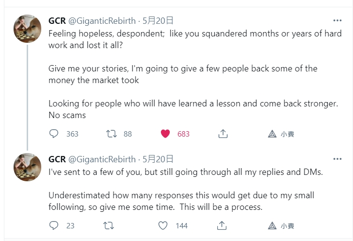

本篇施工中
請注意，每則Twitter下面都會有各種詐騙出沒，通常會使用非常相似的帳戶名稱來回復，通常是病毒連結或假活動聲稱有Free Money。總之連結都不用點開來。
風潮、熱度KOL
Elon Musk
狗狗之王，Doge教父。
無庸置疑，你第一個需要追蹤的是Elon Musk。以防萬一，還是幫大家科普一下他是誰。
Tesla、SpaceX、Neuralink，分別是電動車、火箭、腦神經訊號的公司。偶爾會當一下全球首富，真正喊水會凍結那種。今年初開始很愛發關於Doge迷因，在社群推波助瀾下，Doge漲得亂七八糟。在美國可以用比特幣購買Tesla，這件事情也是Elon一開始在Twitter上先發幾次文，才正式公告的。今天(05/11)也發文投票，問網民們Tesla應不應該接受Doge支付。
以前喊單都能帶動50-60%的漲幅，但最後都會再縮回一半，最近這次喊單則在10分鐘內有15%漲幅。我大概跟了三次，手速不夠快會跟不太漲幅，也來不及逃頂，不太推薦這樣做。
交易所老闆
幣安CZ
因為CZ有鎖留言限制，你可以看看那些人會和他線上互推，就能認識更多名人。
FTX交易所SBF
28歲的年輕富豪，在了解他的故事之後，我覺得他的成功並不是偶然。今天就算加密貨幣市場沒有崛起，他的態度一定還是能讓他成功。
這篇很新的youtube介紹了SBF的經歷。
Kraken交易所
圈內名人
Mark Cuban
Ivan on Tech
創辦一家區塊鏈知識教育機構，Youtube頻道有46萬人訂閱
圈外名人
Peter Schiff
黃金教父、狂熱者。極度不看好比特幣。
有趣的是，他的兒子Spencer Schiff梭哈了加密貨幣，Peter氣炸一度表示要將Spencer從遺產列表上除名。在推特上發問大家應該要相信一個有30年投資經驗的專業經理人，還是一個18歲大學新鮮人，於是大家的回答是… 😏
我喜歡的小眾交易員
Waro
現居荷蘭，幣安大戶，帳戶淨值高達千萬美金級別。安安靜靜的過他的"retired"生活，幣安官方帳號只有追蹤420人，他就是其中一人。
推特內容主要是講述交易紀律與心態。
這是我在幣安合約交易排行榜上找到的，排行榜上能看到各種大戶的帳戶資訊，有部分帳戶是選擇公開的，其中有些帳戶有連結自己的Twitter。
Waro常常抱怨自己的帳戶排行榜常常出BUG顯示不出來，或許是量太大了XD。
偶爾曬單，但開單不會大肆宣揚，沒有跟單這回事。只能從推特的內容向他學習對市場動態的看法。也修正我對風險管理的認知。「平時只買現貨或者1~3倍槓桿，大行情才有可能開高槓桿。」是我目前學到的。
話說各大交易所得高槓桿真的太浮誇，太容易被插針洗掉了。
William Clemente III
19歲的金融學系二年級生，之前在個人簡介中有寫學校，但我當時沒給記下來。
推特內容主要是分享鏈上資料分析，例如淨流入/流出交易所的Bitcoin數量、持有幣的鯨魚地址買入/賣出資料、掛單數量統計等等。這些資料其實在網路上都找的到，但Clemente會找到有意義的圖表拿出來和大家討論。加密貨幣因為在區塊鏈上的資料基本上都是半公開的，儘管我們不知道背後操縱的是誰，卻可以很輕鬆地分析它的資金流向。這是所有傳統金融都不可能發生的事情，傳統上往往要等到波克夏海瑟威的股東會才會知道巴菲特今年操作了哪些股票。(或者媒體爆料)可是你拿到這些資料時，時機往往錯過了。
經典的牛市尚未結束分析，各種你沒想過的角度去分析。
他的訂閱電子報(免費，有夠佛心)
GiganticRebirth
FTX PNL(收益額)#16(06/12資料)，我認為是我找到的Best Alt coin trader。也就是他不挑食，也會交易很多小幣種。
5月大洗盤前就開始小心翼翼的交易員，在五月大洗盤中賺的盆滿缽滿。
印象最深刻的是這個
